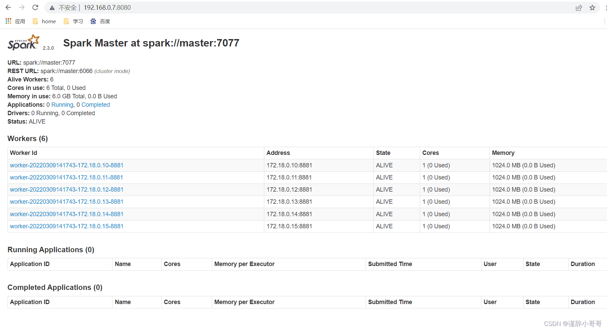

Docker
docker安装
官方教程 for Ubuntu
#Uninstall old versions
#Older versions of Docker were called docker, docker.io, or docker-engine. If these are installed, uninstall them:
sudo apt-get remove docker docker-engine docker.io containerd runc
#Install using the repository
#Before you install Docker Engine for the first time on a new host machine, you need to set up the Docker repository. Afterward, you can install and update Docker from the repository.
#Set up the repository
#Update the apt package index and install packages to allow apt to use a repository over HTTPS:
sudo apt-get update
sudo apt-get install \
ca-certificates \
curl \
gnupg \
lsb-release
#Add Docker’s official GPG key:
sudo mkdir -p /etc/apt/keyrings
curl -fsSL https://download.docker.com/linux/ubuntu/gpg | sudo gpg --dearmor -o /etc/apt/keyrings/docker.gpg
#Use the following command to set up the repository:
echo \
"deb [arch=$(dpkg --print-architecture) signed-by=/etc/apt/keyrings/docker.gpg] https://download.docker.com/linux/ubuntu \
$(lsb_release -cs) stable" | sudo tee /etc/apt/sources.list.d/docker.list > /dev/null
#Install Docker Engine
#Update the apt package index, and install the latest version of Docker Engine, containerd, and Docker Compose, or go to the next step to install a specific version:
sudo apt-get update
sudo apt-get install docker-ce docker-ce-cli containerd.io docker-compose-plugin
使用Tsinghua源
#如果你过去安装过 docker,先删掉:
sudo apt-get remove docker docker-engine docker.io containerd runc
#首先安装依赖:
sudo apt-get install apt-transport-https ca-certificates curl gnupg2 software-properties-common
#根据你的发行版，下面的内容有所不同。
#Ubuntu
#信任 Docker 的 GPG 公钥:
curl -fsSL https://download.docker.com/linux/ubuntu/gpg | sudo gpg --dearmor -o /etc/apt/keyrings/docker.gpg
#添加软件仓库:
echo \
"deb [arch=$(dpkg --print-architecture) signed-by=/etc/apt/keyrings/docker.gpg] https://mirrors.tuna.tsinghua.edu.cn/docker-ce/linux/ubuntu \
$(lsb_release -cs) stable" | sudo tee /etc/apt/sources.list.d/docker.list > /dev/null
#最后安装
sudo apt-get update
sudo apt-get install docker-ce
#Fedora/CentOS/RHEL
#以下内容根据 官方文档 修改而来。
#如果你之前安装过 docker，请先删掉
sudo yum remove docker docker-client docker-client-latest docker-common docker-latest docker-latest-logrotate docker-logrotate docker-engine
#安装一些依赖
sudo yum install -y yum-utils device-mapper-persistent-data lvm2
#根据你的发行版下载repo文件: CentOS/RHEL
yum-config-manager --add-repo https://download.docker.com/linux/centos/docker-ce.repo
#把软件仓库地址替换为 TUNA:
sudo sed -i 's+download.docker.com+mirrors.tuna.tsinghua.edu.cn/docker-ce+' /etc/yum.repos.d/docker-ce.repo
#最后安装:
sudo yum makecache fast
sudo yum install docker-ce
使用阿里源(推荐使用)
#Ubuntu 14.04/16.04（使用 apt-get 进行安装）
# step 1: 安装必要的一些系统工具
sudo apt-get update
sudo apt-get -y install apt-transport-https ca-certificates curl software-properties-common
# step 2: 安装GPG证书
curl -fsSL https://mirrors.aliyun.com/docker-ce/linux/ubuntu/gpg | sudo apt-key add -
# Step 3: 写入软件源信息
sudo add-apt-repository "deb [arch=amd64] https://mirrors.aliyun.com/docker-ce/linux/ubuntu $(lsb_release -cs) stable"
# Step 4: 更新并安装Docker-CE
sudo apt-get -y update
sudo apt-get -y install docker-ce
# 安装指定版本的Docker-CE:
# Step 1: 查找Docker-CE的版本:
# apt-cache madison docker-ce
# docker-ce | 17.03.1~ce-0~ubuntu-xenial | https://mirrors.aliyun.com/docker-ce/linux/ubuntu xenial/stable amd64 Packages
# docker-ce | 17.03.0~ce-0~ubuntu-xenial | https://mirrors.aliyun.com/docker-ce/linux/ubuntu xenial/stable amd64 Packages
# Step 2: 安装指定版本的Docker-CE: (VERSION例如上面的17.03.1~ce-0~ubuntu-xenial)
# sudo apt-get -y install docker-ce=[VERSION]
#CentOS 7（使用 yum 进行安装）
# step 1: 安装必要的一些系统工具
sudo yum install -y yum-utils device-mapper-persistent-data lvm2
# Step 2: 添加软件源信息
sudo yum-config-manager --add-repo https://mirrors.aliyun.com/docker-ce/linux/centos/docker-ce.repo
# Step 3
sudo sed -i 's+download.docker.com+mirrors.aliyun.com/docker-ce+' /etc/yum.repos.d/docker-ce.repo
# Step 4: 更新并安装Docker-CE
sudo yum makecache fast
sudo yum -y install docker-ce
# Step 4: 开启Docker服务
sudo service docker start
# 注意：
# 官方软件源默认启用了最新的软件，您可以通过编辑软件源的方式获取各个版本的软件包。例如官方并没有将测试版本的软件源置为可用，您可以通过以下方式开启。同理可以开启各种测试版本等。
# vim /etc/yum.repos.d/docker-ce.repo
# 将[docker-ce-test]下方的enabled=0修改为enabled=1
#
# 安装指定版本的Docker-CE:
# Step 1: 查找Docker-CE的版本:
# yum list docker-ce.x86_64 --showduplicates | sort -r
# Loading mirror speeds from cached hostfile
# Loaded plugins: branch, fastestmirror, langpacks
# docker-ce.x86_64 17.03.1.ce-1.el7.centos docker-ce-stable
# docker-ce.x86_64 17.03.1.ce-1.el7.centos @docker-ce-stable
# docker-ce.x86_64 17.03.0.ce-1.el7.centos docker-ce-stable
# Available Packages
# Step2: 安装指定版本的Docker-CE: (VERSION例如上面的17.03.0.ce.1-1.el7.centos)
# sudo yum -y install docker-ce-[VERSION]
使用ustc源
#安装 Docker CE，请按照 官方安装文档 ，选择你对应的系统。 以 Ubuntu 为例，参考 官方 Ubuntu 安装 Docker CE 手册 进行安装。 在阅读官方安装手册时，只要把 download.docker.com 地址换成 mirrors.ustc.edu.cn/docker-ce 即可。
#CentOS、 Fedora 等用户在下载 docker-ce.repo 文件后（位于 /etc/yum.repos.d/）， 还需要将该文件中的 download.docker.com 地址换成 mirrors.ustc.edu.cn/docker-ce。
#Uninstall old versions
#Older versions of Docker were called docker, docker.io, or docker-engine. If these are installed, uninstall them:
sudo apt-get remove docker docker-engine docker.io containerd runc
#Install using the repository
#Before you install Docker Engine for the first time on a new host machine, you need to set up the Docker repository. Afterward, you can install and update Docker from the repository.
#Set up the repository
#Update the apt package index and install packages to allow apt to use a repository over HTTPS:
sudo apt-get update
sudo apt-get install \
ca-certificates \
curl \
gnupg \
lsb-release
#Add Docker’s official GPG key:
sudo mkdir -p /etc/apt/keyrings
curl -fsSL https://mirrors.ustc.edu.cn/docker-ce/linux/ubuntu/gpg | sudo gpg --dearmor -o /etc/apt/keyrings/docker.gpg
#Use the following command to set up the repository:
echo \
"deb [arch=$(dpkg --print-architecture) signed-by=/etc/apt/keyrings/docker.gpg] https://mirrors.ustc.edu.cn/docker-ce/linux/ubuntu \
$(lsb_release -cs) stable" | sudo tee /etc/apt/sources.list.d/docker.list > /dev/null
#Install Docker Engine
#Update the apt package index, and install the latest version of Docker Engine, containerd, and Docker Compose, or go to the next step to install a specific version:
sudo apt-get update
sudo apt-get install docker-ce docker-ce-cli containerd.io docker-compose-plugin
使用sjtu源
#如果你过去安装过 docker，先删掉:
sudo apt-get remove docker docker-engine docker.io
#首先安装依赖:
sudo apt-get install apt-transport-https ca-certificates curl gnupg2 software-properties-common
#根据你的发行版，下面的内容有所不同。你使用的发行版：
#Debian
#信任 Docker 的 GPG 公钥:
curl -fsSL https://download.docker.com/linux/debian/gpg | sudo apt-key add -
#对于 amd64 架构的计算机，添加软件仓库:
sudo add-apt-repository \
"deb [arch=amd64] https://mirror.sjtu.edu.cn/docker-ce/linux/debian \
$(lsb_release -cs) \
stable"
#如果你用的是树莓派或其它ARM架构计算机，请运行:
echo "deb [arch=armhf] https://mirror.sjtu.edu.cn/docker-ce/linux/debian \
$(lsb_release -cs) stable" | \
sudo tee /etc/apt/sources.list.d/docker.list
#最后安装
sudo apt-get update
sudo apt-get install docker-ce
#Ubuntu
#信任 Docker 的 GPG 公钥:
curl -fsSL https://download.docker.com/linux/ubuntu/gpg | sudo apt-key add -
#对于 amd64 架构的计算机，添加软件仓库:
sudo add-apt-repository \
"deb [arch=amd64] https://mirror.sjtu.edu.cn/docker-ce/linux/ubuntu \
$(lsb_release -cs) \
stable"
#如果你用的是树莓派或其它ARM架构计算机，请运行:
echo "deb [arch=armhf] https://mirror.sjtu.edu.cn/docker-ce/linux/ubuntu \
$(lsb_release -cs) stable" | \
sudo tee /etc/apt/sources.list.d/docker.list
#最后安装
sudo apt-get update
sudo apt-get install docker-ce
#Fedora/CentOS/RHEL
#以下内容根据TUNA文档修改而来。
#如果你之前安装过 docker，请先删掉
sudo yum remove docker docker-common docker-selinux docker-engine
#安装一些依赖
sudo yum install -y yum-utils device-mapper-persistent-data lvm2
#根据你的发行版下载repo文件:
#CentOS/RHEL
#Fedora
#把软件仓库地址替换为 SJTUG:
sudo sed -i 's+download.docker.com+mirror.sjtu.edu.cn/docker-ce+' /etc/yum.repos.d/docker-ce.repo
#最后安装:
sudo yum makecache fast
sudo yum install docker-ce
docker-compose安装
apt安装
直接使用apt-get install
sudo apt-get install docker-compose
docker国内镜像
https://fast360.xyz/
https://www.cnblogs.com/OneSeting/p/18532166
https://cloud.tencent.com/developer/article/2485043
https://xuanyuan.me/blog/archives/1154
在/etc/docker/daemon.json中添加镜像地址，如：
{
"registry-mirrors": [
"https://hub.fast360.xyz"
]
}
docker走代理
sudo cd /etc/systemd/system/
#创建配置文件
sudo mkdir docker.service.d
cd docker.service.d
sudo vim proxy.conf
#切换到插入模式，插入以下内容
[Service]
Environment="HTTP_PROXY=127.0.0.1:7890"
Environment="HTTPS_PROXY=127.0.0.1:7890"
#保存退出
#重启docker
sudo systemctl daemon-reload
sudo systemctl restart docker
#最后我们仍然是验证一下是否修改成功，运行
sudo docker info
#在长串info信息中如果出现类似下文的内容：
# HTTP Proxy: 代理服务器ip:port
# HTTPS Proxy: 代理服务器ip:port
WSL设置docker代理
当启动docker服务时，后调用/etc/init.d/docker脚本，而此脚本会执行/etc/default/docker脚本，因此可在后者设置代理的环境变量，由此docker拉取镜像时便会使用代理。
修改/etc/default/docker文件，加入以下内容:
export http_proxy="127.0.0.1:7890"
export https_proxy="127.0.0.1:7890"
# 注意：https代理链接为http，Windows IP即为宿主机IP
重启docker：sudo service docker restart
Portainer(docker面板)
#拉取镜像
sudo docker pull portainer/portainer-ce:latest
创建并启动容器
#不映射数据
sudo docker run -d -p 8000:8000 -p 9443:9443 -p 9000:9000 --name portainer --restart=always -v /var/run/docker.sock:/var/run/docker.sock portainer/portainer-ce:latest
#映射数据至指定目录
sudo mkdir -p /mnt/toshiba/docker/portainer-default/
sudo chown ubuntu /mnt/toshiba/docker/portainer-default/
sudo docker run -d -p 8000:8000 -p 9443:9443 -p 9000:9000 --name portainer --restart=always -v /var/run/docker.sock:/var/run/docker.sock -v /mnt/toshiba/docker/portainer-default:/data portainer/portainer-ce:latest
创建完毕后，访问9000端口。
Grafana
docker run -d --name=grafana -p 3000:3000 grafana/grafana
docker run -d --name=grafana -p 3000:3000 grafana/grafana-enterprise
uptime-kuma(应用监控)
sudo docker pull elestio/uptime-kuma:1.23.10
sudo docker run -itd --name uptime-kuma-default -p 13001:3001 elestio/uptime-kuma:1.23.10
minio(分布式对象存储服务器)
sudo docker pull minio/minio:latest
sudo mkdir -p /mnt/toshiba/docker/minio-default/data
sudo chown ubuntu /mnt/toshiba/docker/minio-default/data
sudo mkdir -p /mnt/toshiba/docker/minio-default/config
sudo chown ubuntu /mnt/toshiba/docker/minio-default/config
# 指定用户名和密码
sudo docker run -itd --restart=always --name minio-default -p 9900:9000 -p 9901:9001 -v /mnt/toshiba/docker/minio-default/data:/data -v /mnt/toshiba/docker/minio-default/config:/root/.minio -e "MINIO_ROOT_USER=minioadmin" -e "MINIO_ROOT_PASSWORD=10203090" minio/minio:latest server /data --console-address ":9001"
# 不指定用户名和密码，默认为minioadmin,minioadmin
sudo docker run -itd --restart=always --name minio-default -p 9900:9000 -p 9901:9001 -v /mnt/toshiba/docker/minio-default/data:/data -v /mnt/toshiba/docker/minio-default/config:/root/.minio minio/minio:latest server /data --console-address ":9001"
sun-panel
sudo docker run -d --restart=always -p 8226:3002 -v ~/docker_data/sun-panel/conf:/app/conf -v /var/run/docker.sock:/var/run/docker.sock --name sun-panel hslr/sun-panel:1.5.2
默认账号密码
账号：admin@sun.cc
密码：12345678
1panel(Linux运维面板)
https://hub.docker.com/r/moelin/1panel
由于容器内部systemd限制，部分功能目前尚不完整。
20230919：添加自动修改面板显示应用版本，无需手动修改数据库
相关操作查看下文。
- 默认端口：
10086 - 默认账户：
1panel - 默认密码：
1panel_password - 默认入口：
entrance
docker方式安装：
sudo docker pull moelin/1panel:v1.10.1-lts
sudo docker run -d --name 1panel-default --restart always --network host -p 10086:10086 -v /var/run/docker.sock:/var/run/docker.sock -v /var/lib/docker/volumes:/var/lib/docker/volumes -v /opt:/opt -v /root:/root -e TZ=Asia/Shanghai moelin/1panel:v1.10.1-lts
docker-compose方式安装：
#创建一个docker-compose.yml文件，内容类似如下
version: '3'
services:
1panel:
container_name: 1panel # 容器名
restart: always
network_mode: "host"
volumes:
- /var/run/docker.sock:/var/run/docker.sock
- /var/lib/docker/volumes:/var/lib/docker/volumes
- /opt:/opt # 文件存储映射
- /root:/root # 可选的文件存储映射
environment:
- TZ=Asia/Shanghai # 时区设置
image: moelin/1panel:latest
labels:
createdBy: "Apps"
#然后docker-compose up -d运行
code-server
codercon/code-server
#sudo docker pull codercom/code-server:4.89.1-39
sudo docker pull codercom/code-server:latest
sudo mkdir -p /home/ubuntu/docker/code-server/project/
sudo mkdir -p /home/ubuntu/docker/code-server/.config/
#sudo docker run -itd --name code-server-default -p 8240:8080 -v "/home/ubuntu/docker/code-server/.config:/home/coder/.config" -v "/home/ubuntu/docker/code-server/project:/home/coder/project" -u "$(id -u):$(id -g)" -e "DOCKER_USER=$USER" codercom/code-server:4.89.1-39
sudo docker run -itd --name code-server-default -p 8240:8080 -v "/home/ubuntu/docker/code-server/.config:/home/coder/.config" -v "/home/ubuntu/docker/code-server/project:/home/coder/project" -u "$(id -u):$(id -g)" -e "DOCKER_USER=$USER" codercom/code-server:latest
#sudo docker run -itd --name code-server-default -p 8240:8080 -v "/home/ubuntu/docker/code-server/.config:/home/coder/.config" -v "/home/ubuntu/docker/code-server/project:/home/coder/project" -u "$(id -u):$(id -g)" -e "DOCKER_USER=$USER" -e PASSWORD=123456 codercom/code-server:latest
密码在.config/code-server/config.yaml中。
linuxserver/code-server
#docker pull linuxserver/code-server:4.89.1
docker pull linuxserver/code-server:latest
sudo mkdir -p /home/ubuntu/docker/code-server/project/
sudo mkdir -p /home/ubuntu/docker/code-server/config/
#docker run -d --name=code-server -e PUID=1000 -e PGID=1000 -e TZ=Etc/UTC -e PASSWORD=password -e SUDO_PASSWORD=password -e DEFAULT_WORKSPACE=/config/workspace -p 8240:8443 -v /home/ubuntu/docker/code-server/config:/config --restart unless-stopped linuxserver/code-server:4.89.1
docker run -d --name=code-server -e PUID=1000 -e PGID=1000 -e TZ=Etc/UTC -e PASSWORD=password -e SUDO_PASSWORD=password -e DEFAULT_WORKSPACE=/config/workspace -p 8240:8443 -v /home/ubuntu/docker/code-server/config:/config --restart unless-stopped linuxserver/code-server:latest
mysql8部署
部署命令
拉取镜像
sudo docker pull mysql
运行
#创建映射目录
sudo mkdir -p /home/ubuntu/docker/mysql-default/conf
sudo mkdir -p /home/ubuntu/docker/mysql-default/logs
sudo mkdir -p /home/ubuntu/docker/mysql-default/data
#启动容器
sudo docker run -it --name mysql-default -p 3080:3306 -e MYSQL_ROOT_PASSWORD=123456 --restart=always -v /home/ubuntu/docker/mysql-default/conf:/etc/mysql/conf.d -v /home/ubuntu/docker/mysql-default/logs:/var/log/mysql -v /home/ubuntu/docker/mysql-default/data:/var/lib/mysql mysql
# 报错：[ERROR] [Entrypoint]: mysqld failed while attempting to check config
# command was: mysqld --verbose --help --log-bin-index=/tmp/tmp.UI6ajKmnml
# mysqld: Can't read dir of '/etc/mysql/conf.d/' (OS errno 2 - No such file or #directory)
# mysql5.7的配置在 /etc/mysql
# mysql8.0以上的配置位置在 /etc/mysql/conf.d
#/mydata/mysql/conf:/etc/mysql
# ||
# ||
# ||
# \/
#/mydata/mysql/conf:/etc/mysql/conf.d
配置命令
进入容器
sudo docker exec -it mysql-default /bin/bash
mysql5.7部署
部署命令
拉取镜像
sudo docker pull mysql:5.7
运行
#创建映射目录
sudo mkdir -p /home/ubuntu/docker/mysql5-default/conf
sudo mkdir -p /home/ubuntu/docker/mysql5-default/logs
sudo mkdir -p /home/ubuntu/docker/mysql5-default/mysql
#创建配置文件
cd /home/ubuntu/docker/mysql5-default/conf/
sudo vi my.cnf
‘’‘
# Copyright (c) 2014, 2016, Oracle and/or its affiliates. All rights reserved.
#
# This program is free software; you can redistribute it and/or modify
# it under the terms of the GNU General Public License as published by
# the Free Software Foundation; version 2 of the License.
#
# This program is distributed in the hope that it will be useful,
# but WITHOUT ANY WARRANTY; without even the implied warranty of
# MERCHANTABILITY or FITNESS FOR A PARTICULAR PURPOSE. See the
# GNU General Public License for more details.
#
# You should have received a copy of the GNU General Public License
# along with this program; if not, write to the Free Software
# Foundation, Inc., 51 Franklin St, Fifth Floor, Boston, MA 02110-1301 USA
#
# The MySQL Server configuration file.
#
# For explanations see
# http://dev.mysql.com/doc/mysql/en/server-system-variables.html
[mysqld]
pid-file = /var/run/mysqld/mysqld.pid
socket = /var/run/mysqld/mysqld.sock
datadir = /var/lib/mysql
#log-error = /var/log/mysql/error.log
# Disabling symbolic-links is recommended to prevent assorted security risks
symbolic-links=0
max_connections = 2000
max_user_connections = 1900
max_connect_errors = 100000
max_allowed_packet = 50M
lower_case_table_names=1
[mysqld]
skip-name-resolve
sql_mode=STRICT_TRANS_TABLES,NO_ZERO_IN_DATE,NO_ZERO_DATE,ERROR_FOR_DIVISION_BY_ZERO,NO_AUTO_CREATE_USER,NO_ENGINE_SUBSTITUTION
’‘’
#保存后退出
#启动容器
sudo docker run -p 3090:3306 --name mysql5-default --restart=always -v /home/ubuntu/docker/mysql5-default/conf/my.cnf:/etc/mysql/my.cnf -v /home/ubuntu/docker/mysql5-default/logs:/logs -v /home/ubuntu/docker/mysql5-default/mysql:/var/lib/mysql -e MYSQL_ROOT_PASSWORD=123456 -d mysql:5.7
配置命令
sudo docker exec -it mysql5-default /bin/bash
mongodb部署
部署命令
拉取镜像
sudo docker pull mongo
运行
sudo docker run --name=mongodb-default --restart=always -p 27017:27017 -itd -v /home/ubuntu/docker/mongodb-default/data:/data/db -v/home/ubuntu/docker/mongodb-default/backup:/data/backup -v /home/ubuntu/docker/mongodb-default/conf:/data/configdb mongo --auth
进入mongo容器
sudo docker exec -it mongodb-default mongosh admin
添加账号
db.createUser({user:'admin',pwd:'123456',roles:[{role:'root',db:'admin'}],});
db.auth('admin','123456');
#读取权限的账户
db.createUser({user:'user',pwd:'123456',roles:[{role:"readWrite",db:"elec_safe"}]});
db.auth("user","123456");
apache2部署
部署命令
拉取镜像
sudo docker pull httpd
运行
注：若容器运行后自动无限重启，可使用sudo docker logs httpd-default查看日志输出。
如果输出日志报错AH00534: httpd............，则根据以下命令，在启动容器前先修改httpd.conf的内容/或直接复制全新的httpd.conf。
#创建映射目录
sudo mkdir -p /home/ubuntu/docker/httpd-default/htdocs
sudo mkdir -p /home/ubuntu/docker/httpd-default/conf
sudo touch /home/ubuntu/docker/httpd-default/conf/httpd.conf
sudo mkdir -p /home/ubuntu/docker/httpd-default/logs
#编辑httpd.conf文件内容
'''
#
# This is the main Apache HTTP server configuration file. It contains the
# configuration directives that give the server its instructions.
# See <URL:http://httpd.apache.org/docs/2.4/> for detailed information.
# In particular, see
# <URL:http://httpd.apache.org/docs/2.4/mod/directives.html>
# for a discussion of each configuration directive.
#
# Do NOT simply read the instructions in here without understanding
# what they do. They're here only as hints or reminders. If you are unsure
# consult the online docs. You have been warned.
#
# Configuration and logfile names: If the filenames you specify for many
# of the server's control files begin with "/" (or "drive:/" for Win32), the
# server will use that explicit path. If the filenames do *not* begin
# with "/", the value of ServerRoot is prepended -- so "logs/access_log"
# with ServerRoot set to "/usr/local/apache2" will be interpreted by the
# server as "/usr/local/apache2/logs/access_log", whereas "/logs/access_log"
# will be interpreted as '/logs/access_log'.
#
# ServerRoot: The top of the directory tree under which the server's
# configuration, error, and log files are kept.
#
# Do not add a slash at the end of the directory path. If you point
# ServerRoot at a non-local disk, be sure to specify a local disk on the
# Mutex directive, if file-based mutexes are used. If you wish to share the
# same ServerRoot for multiple httpd daemons, you will need to change at
# least PidFile.
#
ServerRoot "/usr/local/apache2"
#
# Mutex: Allows you to set the mutex mechanism and mutex file directory
# for individual mutexes, or change the global defaults
#
# Uncomment and change the directory if mutexes are file-based and the default
# mutex file directory is not on a local disk or is not appropriate for some
# other reason.
#
# Mutex default:logs
#
# Listen: Allows you to bind Apache to specific IP addresses and/or
# ports, instead of the default. See also the <VirtualHost>
# directive.
#
# Change this to Listen on specific IP addresses as shown below to
# prevent Apache from glomming onto all bound IP addresses.
#
#Listen 12.34.56.78:80
Listen 80
#
# Dynamic Shared Object (DSO) Support
#
# To be able to use the functionality of a module which was built as a DSO you
# have to place corresponding `LoadModule' lines at this location so the
# directives contained in it are actually available _before_ they are used.
# Statically compiled modules (those listed by `httpd -l') do not need
# to be loaded here.
#
# Example:
# LoadModule foo_module modules/mod_foo.so
#
LoadModule mpm_event_module modules/mod_mpm_event.so
#LoadModule mpm_prefork_module modules/mod_mpm_prefork.so
#LoadModule mpm_worker_module modules/mod_mpm_worker.so
LoadModule authn_file_module modules/mod_authn_file.so
#LoadModule authn_dbm_module modules/mod_authn_dbm.so
#LoadModule authn_anon_module modules/mod_authn_anon.so
#LoadModule authn_dbd_module modules/mod_authn_dbd.so
#LoadModule authn_socache_module modules/mod_authn_socache.so
LoadModule authn_core_module modules/mod_authn_core.so
LoadModule authz_host_module modules/mod_authz_host.so
LoadModule authz_groupfile_module modules/mod_authz_groupfile.so
LoadModule authz_user_module modules/mod_authz_user.so
#LoadModule authz_dbm_module modules/mod_authz_dbm.so
#LoadModule authz_owner_module modules/mod_authz_owner.so
#LoadModule authz_dbd_module modules/mod_authz_dbd.so
LoadModule authz_core_module modules/mod_authz_core.so
#LoadModule authnz_ldap_module modules/mod_authnz_ldap.so
#LoadModule authnz_fcgi_module modules/mod_authnz_fcgi.so
LoadModule access_compat_module modules/mod_access_compat.so
LoadModule auth_basic_module modules/mod_auth_basic.so
#LoadModule auth_form_module modules/mod_auth_form.so
#LoadModule auth_digest_module modules/mod_auth_digest.so
#LoadModule allowmethods_module modules/mod_allowmethods.so
#LoadModule isapi_module modules/mod_isapi.so
#LoadModule file_cache_module modules/mod_file_cache.so
#LoadModule cache_module modules/mod_cache.so
#LoadModule cache_disk_module modules/mod_cache_disk.so
#LoadModule cache_socache_module modules/mod_cache_socache.so
#LoadModule socache_shmcb_module modules/mod_socache_shmcb.so
#LoadModule socache_dbm_module modules/mod_socache_dbm.so
#LoadModule socache_memcache_module modules/mod_socache_memcache.so
#LoadModule socache_redis_module modules/mod_socache_redis.so
#LoadModule watchdog_module modules/mod_watchdog.so
#LoadModule macro_module modules/mod_macro.so
#LoadModule dbd_module modules/mod_dbd.so
#LoadModule bucketeer_module modules/mod_bucketeer.so
#LoadModule dumpio_module modules/mod_dumpio.so
#LoadModule echo_module modules/mod_echo.so
#LoadModule example_hooks_module modules/mod_example_hooks.so
#LoadModule case_filter_module modules/mod_case_filter.so
#LoadModule case_filter_in_module modules/mod_case_filter_in.so
#LoadModule example_ipc_module modules/mod_example_ipc.so
#LoadModule buffer_module modules/mod_buffer.so
#LoadModule data_module modules/mod_data.so
#LoadModule ratelimit_module modules/mod_ratelimit.so
LoadModule reqtimeout_module modules/mod_reqtimeout.so
#LoadModule ext_filter_module modules/mod_ext_filter.so
#LoadModule request_module modules/mod_request.so
#LoadModule include_module modules/mod_include.so
LoadModule filter_module modules/mod_filter.so
#LoadModule reflector_module modules/mod_reflector.so
#LoadModule substitute_module modules/mod_substitute.so
#LoadModule sed_module modules/mod_sed.so
#LoadModule charset_lite_module modules/mod_charset_lite.so
#LoadModule deflate_module modules/mod_deflate.so
#LoadModule xml2enc_module modules/mod_xml2enc.so
#LoadModule proxy_html_module modules/mod_proxy_html.so
#LoadModule brotli_module modules/mod_brotli.so
LoadModule mime_module modules/mod_mime.so
#LoadModule ldap_module modules/mod_ldap.so
LoadModule log_config_module modules/mod_log_config.so
#LoadModule log_debug_module modules/mod_log_debug.so
#LoadModule log_forensic_module modules/mod_log_forensic.so
#LoadModule logio_module modules/mod_logio.so
#LoadModule lua_module modules/mod_lua.so
LoadModule env_module modules/mod_env.so
#LoadModule mime_magic_module modules/mod_mime_magic.so
#LoadModule cern_meta_module modules/mod_cern_meta.so
#LoadModule expires_module modules/mod_expires.so
LoadModule headers_module modules/mod_headers.so
#LoadModule ident_module modules/mod_ident.so
#LoadModule usertrack_module modules/mod_usertrack.so
#LoadModule unique_id_module modules/mod_unique_id.so
LoadModule setenvif_module modules/mod_setenvif.so
LoadModule version_module modules/mod_version.so
#LoadModule remoteip_module modules/mod_remoteip.so
#LoadModule proxy_module modules/mod_proxy.so
#LoadModule proxy_connect_module modules/mod_proxy_connect.so
#LoadModule proxy_ftp_module modules/mod_proxy_ftp.so
#LoadModule proxy_http_module modules/mod_proxy_http.so
#LoadModule proxy_fcgi_module modules/mod_proxy_fcgi.so
#LoadModule proxy_scgi_module modules/mod_proxy_scgi.so
#LoadModule proxy_uwsgi_module modules/mod_proxy_uwsgi.so
#LoadModule proxy_fdpass_module modules/mod_proxy_fdpass.so
#LoadModule proxy_wstunnel_module modules/mod_proxy_wstunnel.so
#LoadModule proxy_ajp_module modules/mod_proxy_ajp.so
#LoadModule proxy_balancer_module modules/mod_proxy_balancer.so
#LoadModule proxy_express_module modules/mod_proxy_express.so
#LoadModule proxy_hcheck_module modules/mod_proxy_hcheck.so
#LoadModule session_module modules/mod_session.so
#LoadModule session_cookie_module modules/mod_session_cookie.so
#LoadModule session_crypto_module modules/mod_session_crypto.so
#LoadModule session_dbd_module modules/mod_session_dbd.so
#LoadModule slotmem_shm_module modules/mod_slotmem_shm.so
#LoadModule slotmem_plain_module modules/mod_slotmem_plain.so
#LoadModule ssl_module modules/mod_ssl.so
#LoadModule optional_hook_export_module modules/mod_optional_hook_export.so
#LoadModule optional_hook_import_module modules/mod_optional_hook_import.so
#LoadModule optional_fn_import_module modules/mod_optional_fn_import.so
#LoadModule optional_fn_export_module modules/mod_optional_fn_export.so
#LoadModule dialup_module modules/mod_dialup.so
#LoadModule http2_module modules/mod_http2.so
#LoadModule proxy_http2_module modules/mod_proxy_http2.so
#LoadModule md_module modules/mod_md.so
#LoadModule lbmethod_byrequests_module modules/mod_lbmethod_byrequests.so
#LoadModule lbmethod_bytraffic_module modules/mod_lbmethod_bytraffic.so
#LoadModule lbmethod_bybusyness_module modules/mod_lbmethod_bybusyness.so
#LoadModule lbmethod_heartbeat_module modules/mod_lbmethod_heartbeat.so
LoadModule unixd_module modules/mod_unixd.so
#LoadModule heartbeat_module modules/mod_heartbeat.so
#LoadModule heartmonitor_module modules/mod_heartmonitor.so
#LoadModule dav_module modules/mod_dav.so
LoadModule status_module modules/mod_status.so
LoadModule autoindex_module modules/mod_autoindex.so
#LoadModule asis_module modules/mod_asis.so
#LoadModule info_module modules/mod_info.so
#LoadModule suexec_module modules/mod_suexec.so
<IfModule !mpm_prefork_module>
#LoadModule cgid_module modules/mod_cgid.so
</IfModule>
<IfModule mpm_prefork_module>
#LoadModule cgi_module modules/mod_cgi.so
</IfModule>
#LoadModule dav_fs_module modules/mod_dav_fs.so
#LoadModule dav_lock_module modules/mod_dav_lock.so
#LoadModule vhost_alias_module modules/mod_vhost_alias.so
#LoadModule negotiation_module modules/mod_negotiation.so
LoadModule dir_module modules/mod_dir.so
#LoadModule imagemap_module modules/mod_imagemap.so
#LoadModule actions_module modules/mod_actions.so
#LoadModule speling_module modules/mod_speling.so
#LoadModule userdir_module modules/mod_userdir.so
LoadModule alias_module modules/mod_alias.so
#LoadModule rewrite_module modules/mod_rewrite.so
<IfModule unixd_module>
#
# If you wish httpd to run as a different user or group, you must run
# httpd as root initially and it will switch.
#
# User/Group: The name (or #number) of the user/group to run httpd as.
# It is usually good practice to create a dedicated user and group for
# running httpd, as with most system services.
#
User www-data
Group www-data
</IfModule>
# 'Main' server configuration
#
# The directives in this section set up the values used by the 'main'
# server, which responds to any requests that aren't handled by a
# <VirtualHost> definition. These values also provide defaults for
# any <VirtualHost> containers you may define later in the file.
#
# All of these directives may appear inside <VirtualHost> containers,
# in which case these default settings will be overridden for the
# virtual host being defined.
#
#
# ServerAdmin: Your address, where problems with the server should be
# e-mailed. This address appears on some server-generated pages, such
# as error documents. e.g. admin@your-domain.com
#
ServerAdmin you@example.com
#
# ServerName gives the name and port that the server uses to identify itself.
# This can often be determined automatically, but we recommend you specify
# it explicitly to prevent problems during startup.
#
# If your host doesn't have a registered DNS name, enter its IP address here.
#
#ServerName www.example.com:80
#
# Deny access to the entirety of your server's filesystem. You must
# explicitly permit access to web content directories in other
# <Directory> blocks below.
#
<Directory />
AllowOverride none
Require all denied
</Directory>
#
# Note that from this point forward you must specifically allow
# particular features to be enabled - so if something's not working as
# you might expect, make sure that you have specifically enabled it
# below.
#
#
# DocumentRoot: The directory out of which you will serve your
# documents. By default, all requests are taken from this directory, but
# symbolic links and aliases may be used to point to other locations.
#
DocumentRoot "/usr/local/apache2/htdocs"
<Directory "/usr/local/apache2/htdocs">
#
# Possible values for the Options directive are "None", "All",
# or any combination of:
# Indexes Includes FollowSymLinks SymLinksifOwnerMatch ExecCGI MultiViews
#
# Note that "MultiViews" must be named *explicitly* --- "Options All"
# doesn't give it to you.
#
# The Options directive is both complicated and important. Please see
# http://httpd.apache.org/docs/2.4/mod/core.html#options
# for more information.
#
Options Indexes FollowSymLinks
#
# AllowOverride controls what directives may be placed in .htaccess files.
# It can be "All", "None", or any combination of the keywords:
# AllowOverride FileInfo AuthConfig Limit
#
AllowOverride None
#
# Controls who can get stuff from this server.
#
Require all granted
</Directory>
#
# DirectoryIndex: sets the file that Apache will serve if a directory
# is requested.
#
<IfModule dir_module>
DirectoryIndex index.html
</IfModule>
#
# The following lines prevent .htaccess and .htpasswd files from being
# viewed by Web clients.
#
<Files ".ht*">
Require all denied
</Files>
#
# ErrorLog: The location of the error log file.
# If you do not specify an ErrorLog directive within a <VirtualHost>
# container, error messages relating to that virtual host will be
# logged here. If you *do* define an error logfile for a <VirtualHost>
# container, that host's errors will be logged there and not here.
#
ErrorLog /proc/self/fd/2
#
# LogLevel: Control the number of messages logged to the error_log.
# Possible values include: debug, info, notice, warn, error, crit,
# alert, emerg.
#
LogLevel warn
<IfModule log_config_module>
#
# The following directives define some format nicknames for use with
# a CustomLog directive (see below).
#
LogFormat "%h %l %u %t \"%r\" %>s %b \"%{Referer}i\" \"%{User-Agent}i\"" combined
LogFormat "%h %l %u %t \"%r\" %>s %b" common
<IfModule logio_module>
# You need to enable mod_logio.c to use %I and %O
LogFormat "%h %l %u %t \"%r\" %>s %b \"%{Referer}i\" \"%{User-Agent}i\" %I %O" combinedio
</IfModule>
#
# The location and format of the access logfile (Common Logfile Format).
# If you do not define any access logfiles within a <VirtualHost>
# container, they will be logged here. Contrariwise, if you *do*
# define per-<VirtualHost> access logfiles, transactions will be
# logged therein and *not* in this file.
#
CustomLog /proc/self/fd/1 common
#
# If you prefer a logfile with access, agent, and referer information
# (Combined Logfile Format) you can use the following directive.
#
#CustomLog "logs/access_log" combined
</IfModule>
<IfModule alias_module>
#
# Redirect: Allows you to tell clients about documents that used to
# exist in your server's namespace, but do not anymore. The client
# will make a new request for the document at its new location.
# Example:
# Redirect permanent /foo http://www.example.com/bar
#
# Alias: Maps web paths into filesystem paths and is used to
# access content that does not live under the DocumentRoot.
# Example:
# Alias /webpath /full/filesystem/path
#
# If you include a trailing / on /webpath then the server will
# require it to be present in the URL. You will also likely
# need to provide a <Directory> section to allow access to
# the filesystem path.
#
# ScriptAlias: This controls which directories contain server scripts.
# ScriptAliases are essentially the same as Aliases, except that
# documents in the target directory are treated as applications and
# run by the server when requested rather than as documents sent to the
# client. The same rules about trailing "/" apply to ScriptAlias
# directives as to Alias.
#
ScriptAlias /cgi-bin/ "/usr/local/apache2/cgi-bin/"
</IfModule>
<IfModule cgid_module>
#
# ScriptSock: On threaded servers, designate the path to the UNIX
# socket used to communicate with the CGI daemon of mod_cgid.
#
#Scriptsock cgisock
</IfModule>
#
# "/usr/local/apache2/cgi-bin" should be changed to whatever your ScriptAliased
# CGI directory exists, if you have that configured.
#
<Directory "/usr/local/apache2/cgi-bin">
AllowOverride None
Options None
Require all granted
</Directory>
<IfModule headers_module>
#
# Avoid passing HTTP_PROXY environment to CGI's on this or any proxied
# backend servers which have lingering "httpoxy" defects.
# 'Proxy' request header is undefined by the IETF, not listed by IANA
#
RequestHeader unset Proxy early
</IfModule>
<IfModule mime_module>
#
# TypesConfig points to the file containing the list of mappings from
# filename extension to MIME-type.
#
TypesConfig conf/mime.types
#
# AddType allows you to add to or override the MIME configuration
# file specified in TypesConfig for specific file types.
#
#AddType application/x-gzip .tgz
#
# AddEncoding allows you to have certain browsers uncompress
# information on the fly. Note: Not all browsers support this.
#
#AddEncoding x-compress .Z
#AddEncoding x-gzip .gz .tgz
#
# If the AddEncoding directives above are commented-out, then you
# probably should define those extensions to indicate media types:
#
AddType application/x-compress .Z
AddType application/x-gzip .gz .tgz
#
# AddHandler allows you to map certain file extensions to "handlers":
# actions unrelated to filetype. These can be either built into the server
# or added with the Action directive (see below)
#
# To use CGI scripts outside of ScriptAliased directories:
# (You will also need to add "ExecCGI" to the "Options" directive.)
#
#AddHandler cgi-script .cgi
# For type maps (negotiated resources):
#AddHandler type-map var
#
# Filters allow you to process content before it is sent to the client.
#
# To parse .shtml files for server-side includes (SSI):
# (You will also need to add "Includes" to the "Options" directive.)
#
#AddType text/html .shtml
#AddOutputFilter INCLUDES .shtml
</IfModule>
#
# The mod_mime_magic module allows the server to use various hints from the
# contents of the file itself to determine its type. The MIMEMagicFile
# directive tells the module where the hint definitions are located.
#
#MIMEMagicFile conf/magic
#
# Customizable error responses come in three flavors:
# 1) plain text 2) local redirects 3) external redirects
#
# Some examples:
#ErrorDocument 500 "The server made a boo boo."
#ErrorDocument 404 /missing.html
#ErrorDocument 404 "/cgi-bin/missing_handler.pl"
#ErrorDocument 402 http://www.example.com/subscription_info.html
#
#
# MaxRanges: Maximum number of Ranges in a request before
# returning the entire resource, or one of the special
# values 'default', 'none' or 'unlimited'.
# Default setting is to accept 200 Ranges.
#MaxRanges unlimited
#
# EnableMMAP and EnableSendfile: On systems that support it,
# memory-mapping or the sendfile syscall may be used to deliver
# files. This usually improves server performance, but must
# be turned off when serving from networked-mounted
# filesystems or if support for these functions is otherwise
# broken on your system.
# Defaults: EnableMMAP On, EnableSendfile Off
#
#EnableMMAP off
#EnableSendfile on
# Supplemental configuration
#
# The configuration files in the conf/extra/ directory can be
# included to add extra features or to modify the default configuration of
# the server, or you may simply copy their contents here and change as
# necessary.
# Server-pool management (MPM specific)
#Include conf/extra/httpd-mpm.conf
# Multi-language error messages
#Include conf/extra/httpd-multilang-errordoc.conf
# Fancy directory listings
#Include conf/extra/httpd-autoindex.conf
# Language settings
#Include conf/extra/httpd-languages.conf
# User home directories
#Include conf/extra/httpd-userdir.conf
# Real-time info on requests and configuration
#Include conf/extra/httpd-info.conf
# Virtual hosts
#Include conf/extra/httpd-vhosts.conf
# Local access to the Apache HTTP Server Manual
#Include conf/extra/httpd-manual.conf
# Distributed authoring and versioning (WebDAV)
#Include conf/extra/httpd-dav.conf
# Various default settings
#Include conf/extra/httpd-default.conf
# Configure mod_proxy_html to understand HTML4/XHTML1
<IfModule proxy_html_module>
Include conf/extra/proxy-html.conf
</IfModule>
# Secure (SSL/TLS) connections
#Include conf/extra/httpd-ssl.conf
#
# Note: The following must must be present to support
# starting without SSL on platforms with no /dev/random equivalent
# but a statically compiled-in mod_ssl.
#
<IfModule ssl_module>
SSLRandomSeed startup builtin
SSLRandomSeed connect builtin
</IfModule>
'''
#启动容器
sudo docker run -itd --name httpd-default -p 8234:80 --restart=always -v /home/ubuntu/docker/httpd-default/htdocs:/usr/local/apache2/htdocs -v /home/ubuntu/docker/httpd-default/conf/httpd.conf:/usr/local/apache2/conf/httpd.conf -v /home/ubuntu/docker/httpd-default/logs:/usr/local/apache2/logs httpd
#sudo docker run -itd --name httpd-default -p 8234:80 --restart=always -v /home/ubuntu/docker/httpd-default/htdocs:/usr/local/apache2/htdocs -v /home/ubuntu/docker/httpd-default/conf:/usr/local/apache2/conf -v /home/ubuntu/docker/httpd-default/logs:/usr/local/apache2/logs httpd
配置命令
进入容器
sudo docker exec -it httpd-default /bin/bash
修改中文显示
#首先更新apt源
apt-get update
#安装文本编辑器vim
apt-get install vim
#切换到conf目录
cd ./conf
#修改httpd.conf配置文件，在末尾添加`IndexOptions Charset=UTF-8`
#先备份
cp ./httpd.conf ./httpd.conf.BAK
vi ./httpd.conf
#按`i`进入编辑模式
#在文件末尾插入以下内容
'
IndexOptions Charset=UTF-8
'
#修改完毕后按ESC退出编辑模式，按`:`，输入`wq`后回车，保存退出
#退出容器
exit
#重启容器生效
sudo docker restart httpd-default
设置需要密码访问
#修改Apache的配置文件/usr/local/apache2/conf/httpd.conf，对需要认证的资源所在的目录进行配置
cd ./conf
#修改httpd.conf配置文件，在末尾添加``
#先备份
cp ./httpd.conf ./httpd.conf.BAK
vi ./httpd.conf
#按`i`进入编辑模式，然后修改文件目录对应的<Directory>，此处以`htdocs`根目录为例
#修改Apache的配置文件/usr/local/apache2/conf/httpd.conf，对需要认证的资源所在的目录进行配置
'
<Directory "/usr/local/apache2/htdocs"> #网站根目录
Options Indexes MultiViews
AllowOverride AuthConfig
Order allow,deny
Allow from all
</Directory>
'
#修改完毕后按ESC退出编辑模式，按`:`，输入`wq`后回车，保存退出
#在限制访问目录/usr/local/apache2/htdocs/下创建文件.htaccess，修改文件内容
cd ..
cd ./htdocs
vi .htaccess
#按`i`进入编辑模式，然后修改文件目录对应的<Directory>，此处以`htdocs`根目录为例
'
AuthName "sys"
AuthType Basic
AuthUserFile /usr/local/apache2/htdocs/.htpasswd
require user admin
'
#修改完毕后按ESC退出编辑模式，按`:`，输入`wq`后回车，保存退出
#利用Apache附带的程序htpasswd，生成包含用户名和密码的文本文件：/var/www/html/.htpasswd
htpasswd -c /usr/local/apache2/htdocs/.htpasswd admin
# 若需要添加多个用户，则依次再为每个用户设置密码:
htpasswd -m .htpasswd your_user_name
# htaccess中，添加对应用户名，使用空格分隔
require user admin your_user_name1 your_user_name2
#若使用映射到主机的目录，则为： htpasswd -c /home/ubuntu/docker/httpd-default/htdocs/.htpasswd admin
#输入密码
# 或：/usr/local/apache2/bin/htpasswd -c /usr/local/apache2/htdocs/.htpasswd admin
#退出容器
exit
#重启容器生效
sudo docker restart httpd-default
自定义404等页面
httpd.conf中：
#
# Customizable error responses come in three flavors:
# 1) plain text 2) local redirects 3) external redirects
#
# Some examples:
#ErrorDocument 500 "The server made a boo boo."
#ErrorDocument 404 /missing.html
#ErrorDocument 404 "/cgi-bin/missing_handler.pl"
#ErrorDocument 402 http://www.example.com/subscription_info.html
#
ErrorDocument 400 /error_pages/400.html
ErrorDocument 401 /error_pages/401.html
ErrorDocument 403 /error_pages/403.html
ErrorDocument 404 /error_pages/404.html
ErrorDocument 500 /error_pages/500.html
navidrome自建音乐播放器
先拉取镜像：
#latest version
sudo docker pull deluan/navidrome:latest
#custom version, e.g.pr-2818
sudo docker pull deluan/navidrome:pr-2818
创建并运行容器（自定义音乐所在目录和数据目录）：
#latest version
sudo docker run -itd --name navidrome-default -v /mnt/toshiba/docker/httpd-default/htdocs:/music -v /mnt/toshiba/docker/navidrome-default:/data --restart=unless-stopped --user $(id -u):$(id -g) -p 8236:4533 -e ND_LOGLEVEL=info deluan/navidrome:latest
#custom version, e.g.pr-2818
sudo docker run -itd --name navidrome-default -v /mnt/toshiba/docker/httpd-default/htdocs:/music -v /mnt/toshiba/docker/navidrome-default:/data --restart=unless-stopped --user $(id -u):$(id -g) -p 8236:4533 -e ND_LOGLEVEL=info deluan/navidrome:pr-2818
jellyfin
sudo mkdir -p /home/ubuntu/docker/jellyfin-default/library
sudo mkdir -p /home/ubuntu/docker/jellyfin-default/tvseries
sudo mkdir -p /home/ubuntu/docker/jellyfin-default/movies
sudo docker run -d --name=jellyfin-default -e PUID=1000 -e PGID=1000 -e TZ=Etc/UTC -p 8096:8096 -p 8920:8920 -p 7359:7359 -p 1900:1900 -v /home/ubuntu/docker/jellyfin-default/library:/config -v /home/ubuntu:/data/tvshows -v /home/ubuntu:/data/movies -v /:/data/root --restart unless-stopped linuxserver/jellyfin:10.9.10
#sudo docker run -d --name=jellyfin-default -e PUID=1000 -e PGID=1000 -e TZ=Etc/UTC -p 8096:8096 -p 8920:8920 -p 7359:7359 -p 1900:1900 -v /home/ubuntu/docker/jellyfin-default/library:/config -v /home/ubuntu/docker/jellyfin-default/tvseries:/data/tvshows -v /home/ubuntu/docker/jellyfin-default/movies:/data/movies --restart unless-stopped lscr.io/linuxserver/jellyfin:10.9.10
kodexplorer
1.快速启动
docker run -d -p 80:80 kodcloud/kodexplorer
2.实现数据持久化——创建数据目录并在启动时挂载
mkdir /data
docker run -d -p 80:80 -v /data:/var/www/html kodcloud/kodexplorer
thinServer的部署代码：
cd /mnt/toshiba
mkdir kodexplorer-default
sudo docker pull kodcloud/kodexplorer:4.52
sudo docker run -itd --name kodexplorer-default --restart=always -v /mnt/toshiba/docker/kodexplorer-default:/var/www/html -p 8237:80 kodcloud/kodexplorer:4.52
3.禁止更新：
https://www.jianshu.com/p/65961c08b73d
去更新操作
- 进入你的KodExplorer的根目录, 并找到版本号文件
KodTest文件夹是我的根目录, 所以我的版本号文件在
KodTest/config/version.php - 打开version.php, 将其中的版本号改为
100.520并保存. (这个只要是大于官网最新版本就行) [图片上传失败...(image-14b990-1590122980697)] - 之后, 进入你的KodExplorer, 这时已经不再提醒更新了.
版权信息修改
- 版权信息文件位于
KodTest/config/i18n/zh-CN/main.php目录下, 相关代码在288行左右. 建议没有基础的小白不要自行修改. (KodExplorer的新版本的版权信息位置可能会更改) - 注意: 修改版权信息字样是, 登录会弹出窗口提醒版权信息已修改. 这个弹窗的文件和代码位置目前我还没找到. 所以解决办法可以使不去除版权字样, 但在版权字样前加自己想要的文字, 之后多打几个空格, 这样版权字样没被去除但是版权字样也不会出现. (因为被空格挤出了屏幕)
nextcloud部署
部署命令
拉取镜像
sudo docker pull nextcloud
创建对应的mysql5.7容器，并配置数据库、创建管理员账户
#拉取mysql5.7镜像
sudo docker pull mysql:5.7
#运行mysql5.7镜像
sudo docker run --name=mysql5-default -e MYSQL_ROOT_PASSWORD=123456 -d -p 3306:3306 --restart=always mysql:5.7
#创建nextcloud_db数据库
sudo docker exec -it mysql5-default mysql -u root -p
CREATE DATABASE nextcloud;
GRANT ALL ON *.* TO 'root'@'%';
flush privileges;
exit;
运行
#创建映射目录
sudo mkdir -p /home/ubuntu/docker/nextcloud-default/nextcloud/html
#启动容器
sudo docker run -itd --restart always --name nextcloud-default --link mysql5-default:db -p 8235:80 -v /home/ubuntu/docker/nextcloud-default/nextcloud/html:/var/www/html nextcloud
运行后，配置时数据库名可任意（最好写和上述匹配的mysql5-default），主机名称和端口号写db。
错误：nextcloud 您的数据目录可被其他用户读取 请更改权限为 0770 以避免其他用户查看目录
解决办法：config.php 添加 ‘check_data_directory_permissions’ => false
'check_data_directory_permissions' => false
Nextcloud 通过不被信任的域名访问 动态IP解决方案，允许所有IP访问
解决方法：
打开 /config/config.php
找到 trusted_domains
增加一项
preg_match('/cli/i',php_sapi_name())?'127.0.0.1':$_SERVER['SERVER_NAME']
完整的代码
//索引数字顺延就可以
'trusted_domains' => array(
0 => '127.0.0.1',
1 => preg_match('/cli/i',php_sapi_name())?'127.0.0.1':$_SERVER['SERVER_NAME'],
),
解释：$_SERVER[‘SERVER_NAME’] 为获得当前访问的域名或IP，最初只设置了server_name，后来在查看cron任务时，发现在cli模式下是无法获得的，所以增加了cli模式判断，cli模式直接给个本地IP忽悠程序，正常模式将当前访问的域名或IP动态的添加的信任的域名中。
onlyoffice部署
部署命令
拉取镜像
sudo docker pull onlyoffice/documentserver
运行
#创建映射目录
sudo mkdir -p /home/ubuntu/docker/onlyoffice-default/log
sudo mkdir -p /home/ubuntu/docker/onlyoffice-default/data
sudo mkdir -p /home/ubuntu/docker/onlyoffice-default/lib
sudo mkdir -p /home/ubuntu/docker/onlyoffice-default/db
#启动容器
sudo docker run -i -t -d -p 8236:80 --name onlyoffice-default --restart=always -v /home/ubuntu/docker/onlyoffice-default/log:/var/log/onlyoffice -v /home/ubuntu/docker/onlyoffice-default/data:/var/www/onlyoffice/Data -v /home/ubuntu/docker/onlyoffice-default/lib:/var/lib/onlyoffice -v /home/ubuntu/docker/onlyoffice-default/db:/var/lib/postgresql onlyoffice/documentserver
配置命令
sudo docker exec -it onlyoffice-default /bin/bash
nextcloud与onlyoffice链接
在应用中下载onlyoffice，如果显示链接超时错误，进入目录/home/docker/nextcloud/config，打开config.php文件，在末尾加入内容：
'appstoreenabled' => true,
'appstoreurl' => 'https://www.orcy.net/ncapps/v1/',
在nextcloud的设置中找到ONLYOFFICE，修改相应设置。
如果显示无法连接，则在config.php末尾加上：
'allow_local_remote_servers' => true,
jupyter/base-notebook配置
镜像拉取
sudo docker pull jupyter/base-notebook
创建容器
首先创建一个测试容器，用于生成jupyter-notebook的登陆密码：
#在启动时携带--rm选项表示退出容器时会自动将其删除
sudo docker run --rm -p 8765:8888 jupyter/base-notebook
#在启动时携带--rm选项表示退出容器时会自动将其删除
设置密码：
from notebook.auth import passwd
passwd()
#输入密码，输入确认密码后，生成序列
此处使用了--rm参数，退出容器时会自动将其删除。
然后修改NotebookApp.password为上一步生成的序列，先创建对应工作目录并设置目录权限，然后创建容器：
sudo mkdir -p /home/ubuntu/docker/jupyter-base-notebook-default
sudo chown ubuntu /home/ubuntu/docker/jupyter-base-notebook-default
sudo chmod 777 /home/ubuntu/docker/jupyter-base-notebook-default/
sudo docker run -itd --user root -p 9003:8888 -v /home/ubuntu/docker/jupyter-base-notebook-default:/home/jovyan/work --name jupyter-base-notebook-default jupyter/base-notebook start-notebook.sh --NotebookApp.password='argon2:$argon2id$v=19$m=10240,t=10,p=8$jrgM8WxzlfpOvvvsMnSikg$cZWW4J5Vxan2cUDvkguw4ZWQ7rnnTqPqKVR9XEEeoSY' --NotebookApp.allow_password_change=False --NotebookApp.allow_remote_access=True --NotebookApp.open_browser=False --NotebookApp.notebook_dir="/home/jovyan/work"
#此命令中密码为abcd1234
以下是映射到端口8765，默认密码a0b0c1d2：
sudo mkdir -p /home/ubuntu/docker/jupyter-base-notebook-default
sudo chown ubuntu /home/ubuntu/docker/jupyter-base-notebook-default
sudo chmod 777 /home/ubuntu/docker/jupyter-base-notebook-default/
sudo docker run -itd --user root -p 8765:8888 -v /home/ubuntu/docker/jupyter-base-notebook-default:/home/jovyan/work --name jupyter-base-notebook-default jupyter/base-notebook start-notebook.sh --NotebookApp.password='argon2:$argon2id$v=19$m=10240,t=10,p=8$5yg+H3DM01xG9iGx0fmAdw$0nxMo9IEY9z0WSf/hNcjdpDOwRQhZcAdq/UymeSzJOA' --NotebookApp.allow_password_change=False --NotebookApp.allow_remote_access=True --NotebookApp.open_browser=False --NotebookApp.notebook_dir="/home/jovyan/work"
修改中文
若需修改语言为中文，请使用pip安装此包，然后在Settings-Language中切换语言为中文即可：
pip install jupyterlab-language-pack-zh-CN
rtmp
sudo docker pull alqutami/rtmp-hls
sudo docker run -d -p 11935:1935 -p 18080:8080 alqutami/rtmp-hls
To stream to the server
- Stream live RTMP content to:
rtmp://<server ip>:1935/live/<stream_key>
where <stream_key> is any stream key you specify.
-
Configure OBS to stream content: Go to Settings > Stream, choose the following settings:
-
Service: Custom Streaming Server.
- Server:
rtmp://<server ip>:1935/live. - Stream key: anything you want, however provided video players assume stream key is
test
calibre-web部署
初次启动时的 metadata.db 在File目录中。
sudo docker pull linuxserver/calibre-web:0.6.21
User / Group Identifiers
注：必须使用正确的id，否则会导致目录无读写权限
When using volumes (-v flags), permissions issues can arise between the host OS and the container, we avoid this issue by allowing you to specify the user PUID and group PGID.
Ensure any volume directories on the host are owned by the same user you specify and any permissions issues will vanish like magic.
In this instance PUID=1000 and PGID=1000, to find yours use id your_user as below:
id your_user
Example output:
uid=1000(your_user) gid=1000(your_user) groups=1000(your_user)
docker-compose (recommended, click here for more info)
---
services:
calibre-web:
image: lscr.io/linuxserver/calibre-web:latest
container_name: calibre-web
environment:
- PUID=1000
- PGID=1000
- TZ=Etc/UTC
- DOCKER_MODS=linuxserver/mods:universal-calibre #optional
- OAUTHLIB_RELAX_TOKEN_SCOPE=1 #optional
volumes:
- /path/to/data:/config
- /path/to/calibre/library:/books
ports:
- 8083:8083
restart: unless-stopped
docker cli (click here for more info)
sudo mkdir -p /mnt/toshiba/docker/calibre-web-default/data
sudo mkdir -p /mnt/toshiba/docker/calibre-web-default/library
sudo docker run -d --name=calibre-web-default -e PUID=1000 -e PGID=1000 -e TZ=Etc/UTC -e DOCKER_MODS=linuxserver/mods:universal-calibre `#optional` -e OAUTHLIB_RELAX_TOKEN_SCOPE=1 `#optional` -p 8239:8083 -v /mnt/toshiba/docker/calibre-web-default/data:/config -v /mnt/toshiba/docker/calibre-web-default/library:/books --restart unless-stopped linuxserver/calibre-web:0.6.21
Parameters
| Parameter | Function |
|---|---|
-p 8083 |
WebUI |
-e PUID=1000 |
for UserID - see below for explanation |
-e PGID=1000 |
for GroupID - see below for explanation |
-e TZ=Etc/UTC |
specify a timezone to use, see this list. |
-e DOCKER_MODS=linuxserver/mods:universal-calibre |
#optional & x86-64 only Adds the ability to perform ebook conversion |
-e OAUTHLIB_RELAX_TOKEN_SCOPE=1 |
Optionally set this to allow Google OAUTH to work |
-v /config |
Where calibre-web stores the internal database and config. |
-v /books |
Where your preexisting calibre database is located. |
Environment variables from files (Docker secrets)
You can set any environment variable from a file by using a special prepend FILE__.
As an example:
-e FILE__MYVAR=/run/secrets/mysecretvariable
Will set the environment variable MYVAR based on the contents of the /run/secrets/mysecretvariable file.
teamspeak部署
sudo docker run -p 9987:9987/udp -p 10011:10011 -p 10022:10022 -p 10080:10080 -p 10443:10443 -p 30033:30033 -p 41144:41144 -e TS3SERVER_LICENSE=accept --name teamspeak-default -d teamspeak
然后查看token，使用teamspeak client登陆
sudo docker logs teamspeak-default
kms服务器部署及windoows+office激活
有两个kms服务器镜像，二选一部署即可：
服务器部署
镜像A：mogeko/vlmcsd
sudo docker pull mogeko/vlmcsd
sudo docker run -d --name vlmcsd-default -p 1688:1688 --restart always mogeko/vlmcsd
镜像B：luodaoyi/kms-server
sudo docker pull luodaoyi/kms-server
sudo docker run -d --name kms-server-default -p 1688:1688 --restart always luodaoyi/kms-server
docker-compose spark+hadoop部署
部署命令
首先拉取singularities/spark:2.2镜像。
sudo docker pull singularities/spark
创建工作目录，创建并修改docker-compose.yml。
sudo mkdir singularitiesCR
sudo touch docker-compose.yml
sudo vi docker-compose.yml
docker-compose.yml文件的内容如下，注意需要修改data目录与本机实际的data目录匹配。可以自行修改端口映射。
version: "2"
services:
master:
image: singularities/spark
command: start-spark master
hostname: master
ports:
- "6066:6066"
- "7070:7070"
- "8080:8080"
- "50070:50070"
worker:
image: singularities/spark
command: start-spark worker master
environment:
SPARK_WORKER_CORES: 1
SPARK_WORKER_MEMORY: 2g
links:
- master
volumes:
# 设置本地目录和镜像目录的映射关系（格式：本地机器目录:镜像中对应路径）
- /home/ubuntu/docker/spark-demo/singularitiesCR/data:/input_files
运行容器、查看容器状态、停止容器、删除容器
sudo docker-compose up -d
sudo docker-compose ps
sudo docker-compose stop
sudo docker-compose rm
后台页面对应地址如下：
# Hadoop管理页面
127.0.0.1:50070
# Spark任务管理页面
127.0.0.1:8080
docker-compose搭建spark+hadoop集群
1、安装docker和docker-Compose
(不推荐使用这里的步骤，请参阅最顶部的docker和docker-compose安装教程)
1.1、安装docker
(如果机器中已经安装过docker，可以直接跳过)
关闭防火墙
sudo systemctl stop firewalld
sudo systemctl disable firewalld
sudo systemctl status firewalld
设置SELinux成为permissive模式（临时关闭SELinux）
sudo setenforce 0
sudo getenforce
更换yum源为阿里源加速
sudo yum -y update
sudo mkdir /etc/yum.repos.d/oldrepo
sudo mv /etc/yum.repos.d/*.repo /etc/yum.repos.d/oldrepo/
sudo wget -O /etc/yum.repos.d/CentOS-Base.repo http://mirrors.aliyun.com/repo/Centos-7.repo
sudo yum install -y yum-utils device-mapper-persistent-data lvm2
sudo yum-config-manager --add-repo http://mirrors.aliyun.com/docker-ce/linux/centos/docker-ce.repo
sudo yum clean all
sudo yum makecache fast
安装docker
sudo yum list docker-ce --showduplicates | sort -r
sudo yum -y install docker-ce
sudo systemctl start docker
sudo systemctl enable docker
sudo ps -ef | grep docker
sudo docker version
到这一步能正常输出docker版本，说明docker已经成功安装。
为了后续拉取镜像能更快，需要添加一个镜像：
sudo vi /etc/docker/daemon.json
添加以下内容，保存退出
{
"registry-mirrors": ["https://x3n9jrcg.mirror.aliyuncs.com"]
}
重启docker
sudo systemctl daemon-reload
sudo systemctl restart docker
后面需要用git拉取一些资源，所以要安装git，为了能够正常访问github，需要修改一下hosts文件
sudo yum -y install git
sudo sudo vi /etc/hosts
添加以下内容：
192.30.255.112 github.com git
1.2、安装docker-Compose
(如果已经安装过docker-compose，可以直接跳过)
sudo curl -L https://get.daocloud.io/docker/compose/releases/download/1.27.4/docker-compose-`uname -s`-`uname -m` > /usr/local/bin/docker-compose
sudo chmod +x /usr/local/bin/docker-compose
sudo docker-compose --version
能够正常输出docker-compose版本号，说明成功安装。
2、极速搭建Spark集群（含HDFS集群）
先创建一个文件夹用来存放配置文件，集群的安装路径也会是这个文件夹，所以想好放在哪里比较好，我的路径是：/home/ubuntu/docker/sparkcluster_hdfs/
2.1、编辑hadoop.env配置文件
进入你创建的目录编辑hadoop.env配置文件，我这里是/home/sparkcluster_hdfs目录：
sudo mkdir -p /home/ubuntu/docker/sparkcluster_hdfs/
cd /home/ubuntu/docker/sparkcluster_hdfs/
sudo touch hadoop.env
sudo vi hadoop.env
复制以下内容进去保存
CORE_CONF_fs_defaultFS=hdfs://namenode:8020
CORE_CONF_hadoop_http_staticuser_user=root
CORE_CONF_hadoop_proxyuser_hue_hosts=*
CORE_CONF_hadoop_proxyuser_hue_groups=*
HDFS_CONF_dfs_webhdfs_enabled=true
HDFS_CONF_dfs_permissions_enabled=false
YARN_CONF_yarn_log___aggregation___enable=true
YARN_CONF_yarn_resourcemanager_recovery_enabled=true
YARN_CONF_yarn_resourcemanager_store_class=org.apache.hadoop.yarn.server.resourcemanager.recovery.FileSystemRMStateStore
YARN_CONF_yarn_resourcemanager_fs_state___store_uri=/rmstate
YARN_CONF_yarn_nodemanager_remote___app___log___dir=/app-logs
YARN_CONF_yarn_log_server_url=http://historyserver:8188/applicationhistory/logs/
YARN_CONF_yarn_timeline___service_enabled=true
YARN_CONF_yarn_timeline___service_generic___application___history_enabled=true
YARN_CONF_yarn_resourcemanager_system___metrics___publisher_enabled=true
YARN_CONF_yarn_resourcemanager_hostname=resourcemanager
YARN_CONF_yarn_timeline___service_hostname=historyserver
YARN_CONF_yarn_resourcemanager_address=resourcemanager:8032
YARN_CONF_yarn_resourcemanager_scheduler_address=resourcemanager:8030
YARN_CONF_yarn_resourcemanager_resource___tracker_address=resourcemanager:8031
2.2、编辑docker-compose.yml编排配置文件
还是在/home/sparkcluster_hdfs目录编辑docker-compose.yml编排配置文件：
cd /home/ubuntu/docker/sparkcluster_hdfs/
sudo touch docker-compose.yml
sudo vi docker-compose.yml
复制以下内容进去保存 注意：spark的worker数量，以及worker内存的分配，都可以通过修改docker-compose.yml文件来调整。
1、此为（3datanode+6worker）的yml文件示例
version: "2.2"
services:
namenode:
image: bde2020/hadoop-namenode:1.1.0-hadoop2.7.1-java8
container_name: namenode
volumes:
- ./hadoop/namenode:/hadoop/dfs/name
- ./input_files:/input_files
environment:
- CLUSTER_NAME=test
env_file:
- ./hadoop.env
ports:
- 50070:50070
resourcemanager:
image: bde2020/hadoop-resourcemanager:1.1.0-hadoop2.7.1-java8
container_name: resourcemanager
depends_on:
- namenode
- datanode1
- datanode2
env_file:
- ./hadoop.env
historyserver:
image: bde2020/hadoop-historyserver:1.1.0-hadoop2.7.1-java8
container_name: historyserver
depends_on:
- namenode
- datanode1
- datanode2
volumes:
- ./hadoop/historyserver:/hadoop/yarn/timeline
env_file:
- ./hadoop.env
nodemanager1:
image: bde2020/hadoop-nodemanager:1.1.0-hadoop2.7.1-java8
container_name: nodemanager1
depends_on:
- namenode
- datanode1
- datanode2
env_file:
- ./hadoop.env
datanode1:
image: bde2020/hadoop-datanode:1.1.0-hadoop2.7.1-java8
container_name: datanode1
depends_on:
- namenode
volumes:
- ./hadoop/datanode1:/hadoop/dfs/data
env_file:
- ./hadoop.env
datanode2:
image: bde2020/hadoop-datanode:1.1.0-hadoop2.7.1-java8
container_name: datanode2
depends_on:
- namenode
volumes:
- ./hadoop/datanode2:/hadoop/dfs/data
env_file:
- ./hadoop.env
datanode3:
image: bde2020/hadoop-datanode:1.1.0-hadoop2.7.1-java8
container_name: datanode3
depends_on:
- namenode
volumes:
- ./hadoop/datanode3:/hadoop/dfs/data
env_file:
- ./hadoop.env
master:
image: gettyimages/spark:2.3.0-hadoop-2.8
container_name: master
command: bin/spark-class org.apache.spark.deploy.master.Master -h master
hostname: master
environment:
MASTER: spark://master:7077
SPARK_CONF_DIR: /conf
SPARK_PUBLIC_DNS: localhost
links:
- namenode
expose:
- 4040
- 7001
- 7002
- 7003
- 7004
- 7005
- 7077
- 6066
ports:
- 4040:4040
- 6066:6066
- 7077:7077
- 8080:8080
volumes:
- ./conf/master:/conf
- ./data:/tmp/data
- ./jars:/root/jars
worker1:
image: gettyimages/spark:2.3.0-hadoop-2.8
container_name: worker1
command: bin/spark-class org.apache.spark.deploy.worker.Worker spark://master:7077
hostname: worker1
environment:
SPARK_CONF_DIR: /conf
SPARK_WORKER_CORES: 1
SPARK_WORKER_MEMORY: 1g
SPARK_WORKER_PORT: 8881
SPARK_WORKER_WEBUI_PORT: 8081
SPARK_PUBLIC_DNS: localhost
links:
- master
expose:
- 7012
- 7013
- 7014
- 7015
- 8881
- 8081
ports:
- 8081:8081
volumes:
- ./conf/worker1:/conf
- ./data/worker1:/tmp/data
worker2:
image: gettyimages/spark:2.3.0-hadoop-2.8
container_name: worker2
command: bin/spark-class org.apache.spark.deploy.worker.Worker spark://master:7077
hostname: worker2
environment:
SPARK_CONF_DIR: /conf
SPARK_WORKER_CORES: 1
SPARK_WORKER_MEMORY: 1g
SPARK_WORKER_PORT: 8881
SPARK_WORKER_WEBUI_PORT: 8082
SPARK_PUBLIC_DNS: localhost
links:
- master
expose:
- 7012
- 7013
- 7014
- 7015
- 8881
- 8082
ports:
- 8082:8082
volumes:
- ./conf/worker2:/conf
- ./data/worker2:/tmp/data
worker3:
image: gettyimages/spark:2.3.0-hadoop-2.8
container_name: worker3
command: bin/spark-class org.apache.spark.deploy.worker.Worker spark://master:7077
hostname: worker3
environment:
SPARK_CONF_DIR: /conf
SPARK_WORKER_CORES: 1
SPARK_WORKER_MEMORY: 1g
SPARK_WORKER_PORT: 8881
SPARK_WORKER_WEBUI_PORT: 8083
SPARK_PUBLIC_DNS: localhost
links:
- master
expose:
- 7012
- 7013
- 7014
- 7015
- 8881
- 8083
ports:
- 8083:8083
volumes:
- ./conf/worker3:/conf
- ./data/worker3:/tmp/data
worker4:
image: gettyimages/spark:2.3.0-hadoop-2.8
container_name: worker4
command: bin/spark-class org.apache.spark.deploy.worker.Worker spark://master:7077
hostname: worker4
environment:
SPARK_CONF_DIR: /conf
SPARK_WORKER_CORES: 1
SPARK_WORKER_MEMORY: 1g
SPARK_WORKER_PORT: 8881
SPARK_WORKER_WEBUI_PORT: 8084
SPARK_PUBLIC_DNS: localhost
links:
- master
expose:
- 7012
- 7013
- 7014
- 7015
- 8881
- 8084
ports:
- 8084:8084
volumes:
- ./conf/worker4:/conf
- ./data/worker4:/tmp/data
worker5:
image: gettyimages/spark:2.3.0-hadoop-2.8
container_name: worker5
command: bin/spark-class org.apache.spark.deploy.worker.Worker spark://master:7077
hostname: worker5
environment:
SPARK_CONF_DIR: /conf
SPARK_WORKER_CORES: 1
SPARK_WORKER_MEMORY: 1g
SPARK_WORKER_PORT: 8881
SPARK_WORKER_WEBUI_PORT: 8085
SPARK_PUBLIC_DNS: localhost
links:
- master
expose:
- 7012
- 7013
- 7014
- 7015
- 8881
- 8085
ports:
- 8085:8085
volumes:
- ./conf/worker5:/conf
- ./data/worker5:/tmp/data
worker6:
image: gettyimages/spark:2.3.0-hadoop-2.8
container_name: worker6
command: bin/spark-class org.apache.spark.deploy.worker.Worker spark://master:7077
hostname: worker6
environment:
SPARK_CONF_DIR: /conf
SPARK_WORKER_CORES: 1
SPARK_WORKER_MEMORY: 1g
SPARK_WORKER_PORT: 8881
SPARK_WORKER_WEBUI_PORT: 8086
SPARK_PUBLIC_DNS: localhost
links:
- master
expose:
- 7012
- 7013
- 7014
- 7015
- 8881
- 8086
ports:
- 8086:8086
volumes:
- ./conf/worker6:/conf
- ./data/worker6:/tmp/data
2、此为（2datanode+3worker）的yml文件示例
version: "2.2"
services:
namenode:
image: bde2020/hadoop-namenode:1.1.0-hadoop2.7.1-java8
container_name: namenode
volumes:
- ./hadoop/namenode:/hadoop/dfs/name
- ./input_files:/input_files
environment:
- CLUSTER_NAME=test
env_file:
- ./hadoop.env
ports:
- 50070:50070
resourcemanager:
image: bde2020/hadoop-resourcemanager:1.1.0-hadoop2.7.1-java8
container_name: resourcemanager
depends_on:
- namenode
- datanode1
- datanode2
env_file:
- ./hadoop.env
historyserver:
image: bde2020/hadoop-historyserver:1.1.0-hadoop2.7.1-java8
container_name: historyserver
depends_on:
- namenode
- datanode1
- datanode2
volumes:
- ./hadoop/historyserver:/hadoop/yarn/timeline
env_file:
- ./hadoop.env
nodemanager1:
image: bde2020/hadoop-nodemanager:1.1.0-hadoop2.7.1-java8
container_name: nodemanager1
depends_on:
- namenode
- datanode1
- datanode2
env_file:
- ./hadoop.env
datanode1:
image: bde2020/hadoop-datanode:1.1.0-hadoop2.7.1-java8
container_name: datanode1
depends_on:
- namenode
volumes:
- ./hadoop/datanode1:/hadoop/dfs/data
env_file:
- ./hadoop.env
datanode2:
image: bde2020/hadoop-datanode:1.1.0-hadoop2.7.1-java8
container_name: datanode2
depends_on:
- namenode
volumes:
- ./hadoop/datanode2:/hadoop/dfs/data
env_file:
- ./hadoop.env
master:
image: gettyimages/spark:2.3.0-hadoop-2.8
container_name: master
command: bin/spark-class org.apache.spark.deploy.master.Master -h master
hostname: master
environment:
MASTER: spark://master:7077
SPARK_CONF_DIR: /conf
SPARK_PUBLIC_DNS: localhost
links:
- namenode
expose:
- 4040
- 7001
- 7002
- 7003
- 7004
- 7005
- 7077
- 6066
ports:
- 4040:4040
- 6066:6066
- 7077:7077
- 8080:8080
volumes:
- ./conf/master:/conf
- ./data:/tmp/data
- ./jars:/root/jars
worker1:
image: gettyimages/spark:2.3.0-hadoop-2.8
container_name: worker1
command: bin/spark-class org.apache.spark.deploy.worker.Worker spark://master:7077
hostname: worker1
environment:
SPARK_CONF_DIR: /conf
SPARK_WORKER_CORES: 1
SPARK_WORKER_MEMORY: 1g
SPARK_WORKER_PORT: 8881
SPARK_WORKER_WEBUI_PORT: 8081
SPARK_PUBLIC_DNS: localhost
links:
- master
expose:
- 7012
- 7013
- 7014
- 7015
- 8881
- 8081
ports:
- 8081:8081
volumes:
- ./conf/worker1:/conf
- ./data/worker1:/tmp/data
worker2:
image: gettyimages/spark:2.3.0-hadoop-2.8
container_name: worker2
command: bin/spark-class org.apache.spark.deploy.worker.Worker spark://master:7077
hostname: worker2
environment:
SPARK_CONF_DIR: /conf
SPARK_WORKER_CORES: 1
SPARK_WORKER_MEMORY: 1g
SPARK_WORKER_PORT: 8881
SPARK_WORKER_WEBUI_PORT: 8082
SPARK_PUBLIC_DNS: localhost
links:
- master
expose:
- 7012
- 7013
- 7014
- 7015
- 8881
- 8082
ports:
- 8082:8082
volumes:
- ./conf/worker2:/conf
- ./data/worker2:/tmp/data
worker3:
image: gettyimages/spark:2.3.0-hadoop-2.8
container_name: worker3
command: bin/spark-class org.apache.spark.deploy.worker.Worker spark://master:7077
hostname: worker3
environment:
SPARK_CONF_DIR: /conf
SPARK_WORKER_CORES: 1
SPARK_WORKER_MEMORY: 1g
SPARK_WORKER_PORT: 8881
SPARK_WORKER_WEBUI_PORT: 8083
SPARK_PUBLIC_DNS: localhost
links:
- master
expose:
- 7012
- 7013
- 7014
- 7015
- 8881
- 8083
ports:
- 8083:8083
volumes:
- ./conf/worker3:/conf
- ./data/worker3:/tmp/data
2.3、执行docker-compose命令，一键搭建集群
还是在/home/sparkcluster_hdfs目录下，执行命令：
sudo docker-compose up -d
接下来静候命令执行完成，整个spark和hdfs集群环境就搭建好了。
2.4、查看集群环境
在/home/sparkcluster_hdfs目录查看容器情况：
sudo docker-compose ps
用浏览器查看hdfs，如下图，可见有三个DataNode 地址是：http://centos机器的ip:50070，e.g.: 127.0.0.1:50070

浏览器查看spark，如下图，可见有六个worker 地址是：http://centos机器的ip:8080，e.g.: 127.0.0.1:8080

在CentOS机器的命令行输入以下命令，即可创建一个spark_shell：
sudo docker exec -it master spark-shell --executor-memory 512M --total-executor-cores 2
3、spark集群开机自启动
spark集群和hdfs集群由多个容器各司其职来完成整个工作的，每个容器启动有顺序要求，官方通过 docker-compose.yml 文件对容器进行编排，使用 depends_on 定义依赖关系决定了容器的启动顺序。常规来说，正常使用 docker-compose 来启动容器不会存在任何问题，各个容器服务都能正常启动并运行。
我们上面配置的docker-compose.yml文件中并没有给容器配置开机自启（restart: always）
但是…
如果你在docker-compose.yml 中为所有容器都配置了 restart: always 这表示所有的容器在意外关闭后都会自动重启，比如 docker 重启或服务器重启。
然而…
docker 本身对容器的启动是不区分顺序的，也就是你可以认为 depends_on 是 docker-compose 独有的功能。当我们服务器重启后，docker 会将设定 restart: always 的容器启动（不分先后顺序）。而我们实际的业务需要又会因为启动顺序问题导致一些容器启动失败，这样就出现了我们的集群在服务器重启后可能出现部分容器启动失败的问题。
那么，如何解决这个问题呢？
写一个系统服务（将 spark和hdfs集群 配置为 systemd 的 service），将 docker-compose up -d 纳入启动命令中，将 docker-compose stop纳入停止命令中，这样将服务配置为随系统启动即可。
3.1、自定义系统服务
进入到/usr/lib/systemd/system/目录，并编辑一个spark和hdfs集群的服务配置文件（这里我把文件命名为：sparkcluster_hdfs.service）:
cd /usr/lib/systemd/system/
sudo vi sparkcluster_hdfs.service
添加以下内容：
[Unit]
Description=sparkcluster_hdfs
After=docker.service systemd-networkd.service systemd-resolved.service
Requires=docker.service
Documentation=https://www.baidu.com/
[Service]
Type=simple
Restart=always
RestartSec=5
PrivateTmp=true
ExecStart=/usr/local/bin/docker-compose -f /home/sparkcluster_hdfs/docker-compose.yml up
ExecReload=/usr/local/bin/docker-compose -f /home/sparkcluster_hdfs/docker-compose.yml restart
ExecStop=/usr/local/bin/docker-compose -f /home/sparkcluster_hdfs/docker-compose.yml stop
[Install]
WantedBy=multi-user.target
这里面的路径只能是绝对路径！！！ docker-compose 的绝对路径，可以通过命令 which docker-compose 查看。
3.2、设置服务为随系统自启
设置开机自启
sudo systemctl enable sparkcluster_hdfs
启动服务
sudo systemctl start sparkcluster_hdfs
最后，重启你的服务器验证一下结果。
v2ray-core
nginx-proxy-manager
sudo docker pull jc21/nginx-proxy-manager:2.12.2
sudo docker pull zoeyvid/nginx-proxy-manager:341
sudo docker pull chishin/nginx-proxy-manager-zh:2.12.2
sudo docker pull zoeyvid/npmplus:434
#https://hub.docker.com/r/zoeyvid/npmplus#quick-setup
docker-compose方式：
version: '3'
services:
app:
image: 'jc21/nginx-proxy-manager:latest'
restart: unless-stopped
ports:
- '80:80'
- '81:81'
- '443:443'
volumes:
- ./data:/data
- ./letsencrypt:/etc/letsencrypt
docker-compose up -d
#如果使用的是 docker-compose-plugin
docker compose up -d
openvpn
教程1：
- 镜像：https://hub.docker.com/r/kylemanna/openvpn
docker pull kylemanna/openvpn:latest
# 创建缩主机目录
mkdir openvpn
- docker-compose.yml
services:
openvpn:
image: kylemanna/openvpn:latest
container_name: openvpn
volumes:
- /etc/localtime:/etc/localtime
- ./openvpn:/etc/openvpn
ports:
- '1194:1194/udp'
cap_add:
- NET_ADMIN
restart: always
privileged: true
- 公网 IP
# 查询服务器公网 IP 地址
curl ifconfig.me
- 公网 IP 是一个唯一标识你的服务器的地址。当客户端想要连接到 OpenVPN 服务器时，它们需要知道服务器的公网 IP 才能建立连接。
- 路由器和防火墙通过公网 IP 来将传入的 OpenVPN 流量路由到正确的服务器。
使用方法
生成配置文件
# 生成 OpenVPN 配置文件，使用 UDP 协议和指定的服务器 IP 地址
docker-compose run --rm openvpn ovpn_genconfig -u udp://公网IP
初始化 PKI
# 初始化 Public Key Infrastructure (PKI)，也就是生成和管理证书、密钥
docker-compose run --rm openvpn ovpn_initpki
# 输入新的 CA 密钥
# Common Name (eg: your user, host, or server name) [Easy-RSA CA]
生成客户端证书
# 生成客户端证书，而且这个证书是无需密码的
docker-compose run --rm openvpn easyrsa build-client-full client1 nopass
# 或：生成客户端证书，而且这个证书是有密码的
docker-compose run --rm openvpn easyrsa build-client-full client2
- 新生成的客户端证书密钥文件在 ./openvpn/pki/private 目录下
# 导出已生成的客户端配置文件（.ovpn 文件）
docker-compose run --rm openvpn ovpn_getclient client1 > ./client1.ovpn
启动 VPN 服务
# 启动 openvpn 服务
docker-compose up -d openvp
载你系统对应的客户端并安装运行后，在你的任务栏右下角中可看到小电脑类似的图标，右键后在出来的导入配置文件选项中，将先前导出的客户端配置文件client1.ovpn文件
撤销客户端证书
# 撤销客户端证书
docker-compose run --rm openvpn easyrsa revoke client1
# 生成证书撤销列表（CRL），并且额外指示 EasyRSA 更新相关数据库或索引
docker-compose run *--rm openvpn easyrsa gen-crl update-db*
# 重启 openvpn 服务
docker-compose up -d openvpn
Docker容器内部的命令执行
# 创建client1用户，有两次密码输入
easyrsa build-client-full client1
# 导出证书
cd /etc/openvpn/pki/private/ && ovpn_getclient client1 > ./client1.ovpn
#注销client1用户，注意，注销完后同样需要重启容器
easyrsa revoke client1
常见问题
1、在连接时提示：server pushed compression settings that are not allowed and will result in a non-working connection. See also allow-compression in the manual.
解决方案：在你的OpenVPN配置文件中添加或修改以下行
allow-compression yes
教程2：
Docker 部署
- 镜像：https://hub.docker.com/r/kylemanna/openvpn
docker pull kylemanna/openvpn:latest
# 创建缩主机目录
mkdir openvpn
- docker-compose.yml
services:
openvpn:
image: kylemanna/openvpn:latest
container_name: openvpn
volumes:
- /etc/localtime:/etc/localtime
- ./openvpn:/etc/openvpn
ports:
- '1194:1194/udp'
cap_add:
- NET_ADMIN
restart: always
privileged: true
公网 IP
# 查询服务器公网 IP 地址
curl ifconfig.me
- 公网 IP 是一个唯一标识你的服务器的地址。当客户端想要连接到 OpenVPN 服务器时，它们需要知道服务器的公网 IP 才能建立连接。
- 路由器和防火墙通过公网 IP 来将传入的 OpenVPN 流量路由到正确的服务器。
使用方法
生成配置文件
# 生成 OpenVPN 配置文件，使用 UDP 协议和指定的服务器 IP 地址
docker-compose run --rm openvpn ovpn_genconfig -u udp://公网IP
- 在 ./openvpn 目录下生成配置文件
初始化 PKI
# 初始化 Public Key Infrastructure (PKI)，也就是生成和管理证书、密钥
docker-compose run --rm openvpn ovpn_initpki
# 输入新的 CA 密钥
# Common Name (eg: your user, host, or server name) [Easy-RSA CA]
- 在 ./openvpn 目录下新生成 pki 目录
生成客户端证书
# 生成客户端证书，而且这个证书是无需密码的
docker-compose run --rm openvpn easyrsa build-client-full client1 nopass
# 或：生成客户端证书，而且这个证书是有密码的
docker-compose run --rm openvpn easyrsa build-client-full client2
- 新生成的客户端证书密钥文件在 ./openvpn/pki/private 目录下
# 导出已生成的客户端配置文件（.ovpn 文件）
docker-compose run --rm openvpn ovpn_getclient client1 > ./client1.ovpn
- client1.ovpn 文件
启动 VPN 服务
# 启动 openvpn 服务
docker-compose up -d openvpn
OpenVPN 客户端
撤销客户端证书
# 撤销客户端证书
docker-compose run --rm openvpn easyrsa revoke client1
- 并且 ./openvpn/pki/private 目录下的 client1.key 文件也已被删除
# 生成证书撤销列表（CRL），并且额外指示 EasyRSA 更新相关数据库或索引
docker-compose run --rm openvpn easyrsa gen-crl update-db
# 重启 openvpn 服务
docker restart openvpn
注意： 完成 openvpn 服务重启后，客户端证书才算真正完成撤销。
××openvpn-as
zh-cn:
拉取镜像：
sudo docker pull openvpn/openvpn-as:2.14.1-ff013d4d-Ubuntu22
运行：
创建数据文件夹：
sudo mkdir -p /home/ubuntu/docker/openvpn-as-default/openvpn
基于 Access Server 镜像并使用以下参数运行 Docker 容器：
sudo docker run -itd --name=openvpn-as-default --restart=always --device /dev/net/tun --cap-add=MKNOD --cap-add=NET_ADMIN -p 943:943 -p 443:443 -p 1194:1194/udp -v /home/ubuntu/docker/openvpn-as-default/openvpn:/openvpn openvpn/openvpn-as:2.14.1-ff013d4d-Ubuntu22
#sudo docker run -itd --name=openvpn-as-default --restart=always --device /dev/net/tun --cap-add=MKNOD --cap-add=NET_ADMIN -p 40943:943 -p 40443:443 -p 41194:1194/udp -v /home/ubuntu/docker/openvpn-as-default/openvpn:/openvpn openvpn/openvpn-as:2.14.1-ff013d4d-Ubuntu22
| 1 | 为 VPN 流量提供对 TUN 设备的访问。 |
|---|---|
| 2 | 允许容器创建设备节点。 |
| 3 | 授予容器必要的网络管理权限。 |
| 4 | 打开必要的端口：943 用于管理 Web UI，443 用于 TCP，1194 用于 UDP。 |
| 5 | 存储 Access Server 配置文件的位置。将 * |
登录到管理 Web UI：
您已经安装了 Access Server，并且容器正在运行。现在，您可以登录到管理 Web UI，这是一个用于管理 VPN 服务器的基于 Web 的图形界面，无需 Linux 知识也能使用。
管理 Web UI 可通过 https://DOCKER-HOST-IP:943/admin 访问。
查找临时密码
默认用户是 *openvpn*，您可以在容器日志中找到与初始 Access Server 配置一起创建的临时密码：
- 在容器运行时，使用以下命令显示日志：
bash
sudo docker logs -f openvpn-as
-
显示 Access Server 初始配置工具的输出。
-
滚动查找行，*Auto-generated pass = "
". Setting in db...* -
使用生成的密码和 *openvpn* 用户名登录管理 Web UI。
以管理员身份登录
要访问并登录到管理 Web UI：
-
打开一个 Web 浏览器。
-
输入管理 Web UI URL，格式为 *https://DOCKER-HOST-IP:943/admin*。
-
会显示安全警告。Access Server 使用自签名 SSL 证书。我们建议您将其替换为签名证书。请参阅 SSL 证书。
### 重要
确保在 URL 中使用 *https*。
-
点击通过安全警告。
-
显示 *管理员登录* 页面。
-
输入 *openvpn* 用户名和临时密码，然后点击 *登录*。
-
显示 EULA，供您阅读、接受并继续到管理员 Web UI 配置页面。
更新 IP 地址/主机名
为了使您的设备能够正确连接到 VPN 服务器，您需要更新域名或公网 IP 地址：
-
登录到管理 Web UI。
-
点击 *配置 > 网络设置*。
-
将 *主机名或 IP 地址* 字段更改为公网 IP 地址或您的域名。
### 注意
Access Server 可能会在此字段中填充一个私有 IP 地址。客户端需要公网 IP 来从外部网络访问，或者是映射了 A 记录的域名。我们建议使用 域名。
- 点击 *保存设置* 并点击 *更新正在运行的服务器*。
限制和已知问题
以下是从 Docker 镜像部署 Access Server 时的已知问题或限制：
- *故障转移模式：* 不支持此功能。
- *第 2 层（桥接）：* 不支持此模式。
- *固定许可证密钥：* 不支持此许可证密钥模型。使用固定密钥可能会导致许可证失效，因为硬件规格指纹不是持久性的。
- *DCO：* 如果您在主机 Linux 系统上安装并加载 DCO，则可以启用 DCO。
- *集群：* 您可以使用从 Docker 镜像部署的 Access Server 构建集群功能，具有以下限制：
- 必须暴露端口 TCP945 用于节点间通信。
- 每个主机系统一次只能运行一个集群节点。
- 主机必须能够直接通过互联网访问，而不是通过负载均衡器、代理或入口控制器。
- *性能：* 额外的抽象层可能导致性能下降并增加延迟。我们不建议使用 Docker 部署高负载的安装。
- *PAM 认证方法：* 我们建议避免使用 PAM 作为认证方法，因为存储在容器中的用户凭证不是持久性的。
- *日志：* Access Server 会将日志转发到 Docker，因此它不能在 Access Server 配置中处理日志记录。请参阅 Docker 日志文档以设置日志轮换、转发等。
- *IPv6：* 如果您计划为 VPN 客户端使用 IPv6，我们不建议将 Access Server 部署在 Docker 容器中，因为 Docker 网络工具集对 IPv6 的支持是有限的/实验性的。
en:
Pull the image:
sudo docker pull openvpn/openvpn-as
Run:
Create data folder:
sudo mkdir -p /home/ubuntu/docker/openvpn-as-default
Run the Docker container based on the Access Server image with these parameters:
sudo docker run -itd --name=openvpn-as-default --device /dev/net/tun --cap-add=MKNOD --cap-add=NET_ADMIN -p 40943:943 -p 40443:443 -p 41194:1194/udp -v /home/ubuntu/docker/openvpn-as-default:/openvpn openvpn/openvpn-as
| 1 | Provides access to the TUN device for VPN traffic. |
|---|---|
| 2 | Allows the container to create device nodes. |
| 3 | Grants the container the necessary network administration capabilities. |
| 4 | Opens up the necessary ports: 943 for the Admin Web UI, 443 for TCP, and 1194 for UDP. |
| 5 | Location for storing the Access Server configuration files. Replace * |
Sign in to the Admin Web UI:
You've installed Access Server, and the container is running. You can now sign in to the Admin Web UI, a web-based GUI for managing your VPN server, with or without Linux knowledge.
The Admin Web UI is available at https://DOCKER-HOST-IP:943/admin.
Find the temporary password
The default user is *openvpn* and you can find the temporary password created with the initial Access Server configuration in the container logs:
- With the container running, display the logs with this command:
bash
sudo docker logs -f openvpn-as
-
The Access Server Initial Configuration Tool output displays.
-
Scroll to find the line, *Auto-generated pass = "
". Setting in db...* -
Use the generated password with the *openvpn* username to sign in to the Admin Web UI.
Sign in as an administrator
To access and sign in to the Admin Web UI:
-
Open a web browser.
-
Enter the Admin Web UI URL, available at *https://DOCKER-HOST-IP:943/admin*.
-
A security warning displays. Access Server uses a self-signed SSL certificate. We recommend replacing it with a signed certificate. Refer to SSL Certificates.
### Important
Ensure you use *https* in the URL.
-
Click through the security warning.
-
The *Admin Login* displays.
-
Enter the *openvpn* username with the temporary password and click *Sign In*.
-
The EULA displays for you to read through, accept, and proceed to the Admin Web UI configuration pages.
Update the IP address/hostname
For your devices to properly connect to your VPN server, you need to update the domain or public IP address:
-
Sign in to the Admin Web UI.
-
Click *Configuration > Network Settings*.
-
Change the *Hostname or IP Address* field to a public IP address or your domain name.
### Note
Access Server likely has a private IP address populated in this field. Clients need a public IP to access from outside the network, or a domain name mapped with an A record. We recommend using a domain name.
- Click *Save Settings* and *Update Running Server*.
Limitations and known issues
The following are known issues or limitations if you deploy Access Server from a Docker image:
- *Failover mode:* This feature isn't supported.
- *Layer 2 (bridging):* This mode isn't supported.
- *Fixed license keys:* This license key model isn't supported. Using fixed keys can cause license invalidation because the hardware specification fingerprint isn't persistent.
- *DCO:* You can enable DCO with Access Server if you install and load it on the host Linux system.
- *Clustering:* You can use Access Servers, deployed from Docker images, to build cluster functionality with the following limitations:
- You must expose port TCP945 for internode communication.
- You can only run one cluster node per Host system at a time.
- Hosts must be available directly from the internet, not via a load balancer, proxy, or ingress controller.
- *Performance:* The additional abstraction layer can cause performance degradation and increase latency. We don't recommend deploying highly loaded installations using Docker.
- *PAM authentication method:* We recommend avoiding PAM as your authentication method because user credentials stored inside the container aren't persistent.
- *Logs:* Access Server forwards logs to Docker, so it can't handle logging in the Access Server configuration. See the Docker logging documentation to set up rotation, forwarding, etc.
- *IPv6:* We don't recommend Access Server inside a Docker container if you plan to use IPv6 for VPN clients because IPv6 support in the Docker network toolset is limited/experimental.
qbittorrent
linuxserver/qbittorrent
sudo docker pull linuxserver/qbittorrent:amd64-5.0.3-libtorrentv1
sudo mkdir -p /mnt/sda1/docker/qbittorrent-default/appdata
sudo mkdir -p /mnt/sda1/docker/qbittorrent-default/downloads
docker-compose
---
services:
qbittorrent:
image: linuxserver/qbittorrent:amd64-5.0.3-libtorrentv1
container_name: qbittorrent
environment:
- PUID=1000
- PGID=1000
- TZ=Etc/UTC
- WEBUI_PORT=8080
- TORRENTING_PORT=6881
volumes:
- /mnt/sda1/docker/qbittorrent-default/appdata:/config
- /mnt/sda1/docker/qbittorrent-default/downloads:/downloads #optional
ports:
- 8080:8080
- 6881:6881
- 6881:6881/udp
restart: unless-stopped
docker-cli:
这里映射55555端口用于传输。
sudo docker run -itd --name=qbittorrent-default -e PUID=1000 -e PGID=1000 -e TZ=Etc/UTC -e WEBUI_PORT=48238 -e TORRENTING_PORT=46881 -p 48238:48238 -p 46881:46881 -p 46881:46881/udp -p 55555:55555 -v /mnt/sda1/docker/qbittorrent-default/appdata:/config -v /mnt/sda1/docker/qbittorrent-default/downloads:/downloads --restart unless-stopped linuxserver/qbittorrent:amd64-5.0.3-libtorrentv1
Parameters
Containers are configured using parameters passed at runtime (such as those above). These parameters are separated by a colon and indicate <external>:<internal> respectively. For example, -p 8080:80 would expose port 80 from inside the container to be accessible from the host's IP on port 8080 outside the container.
| Parameter | Function |
|---|---|
-p 8080:8080 |
WebUI |
-p 6881:6881 |
tcp connection port |
-p 6881:6881/udp |
udp connection port |
-e PUID=1000 |
for UserID - see below for explanation |
-e PGID=1000 |
for GroupID - see below for explanation |
-e TZ=Etc/UTC |
specify a timezone to use, see this list. |
-e WEBUI_PORT=8080 |
for changing the port of the web UI, see below for explanation |
-e TORRENTING_PORT=6881 |
for changing the port of tcp/udp connection, see below for explanation |
-v /config |
Contains all relevant configuration files. |
-v /downloads |
Location of downloads on disk. |
--read-only=true |
Run container with a read-only filesystem. Please read the docs. |
--user=1000:1000 |
Run container with a non-root user. Please read the docs. |